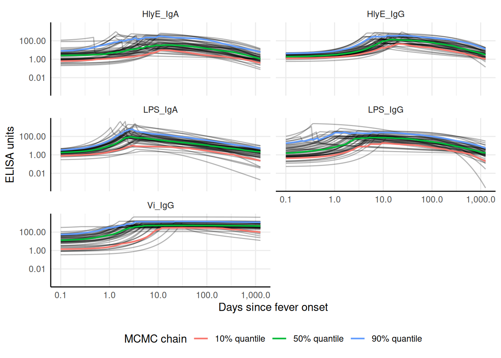
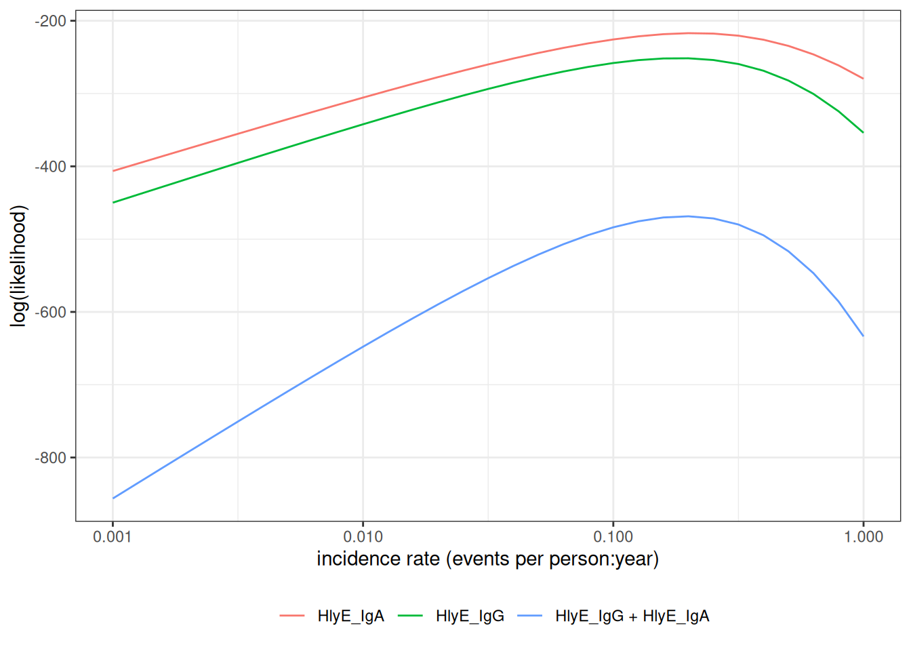
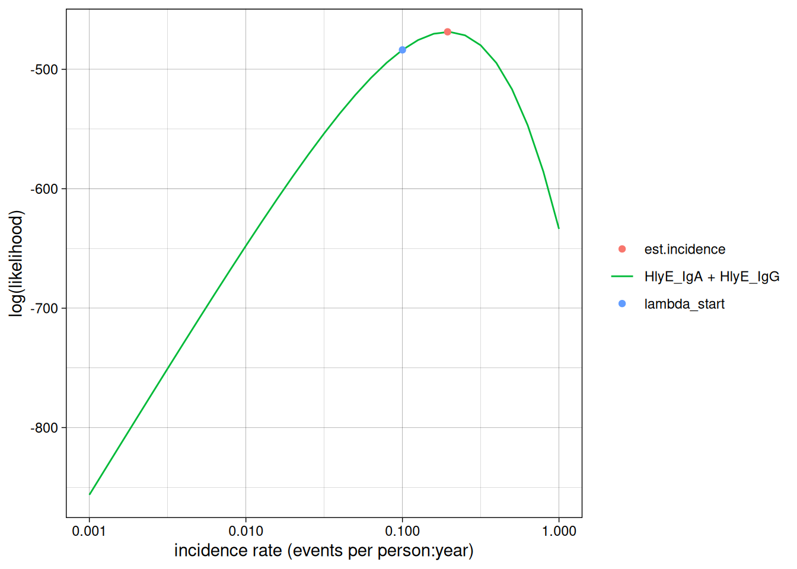
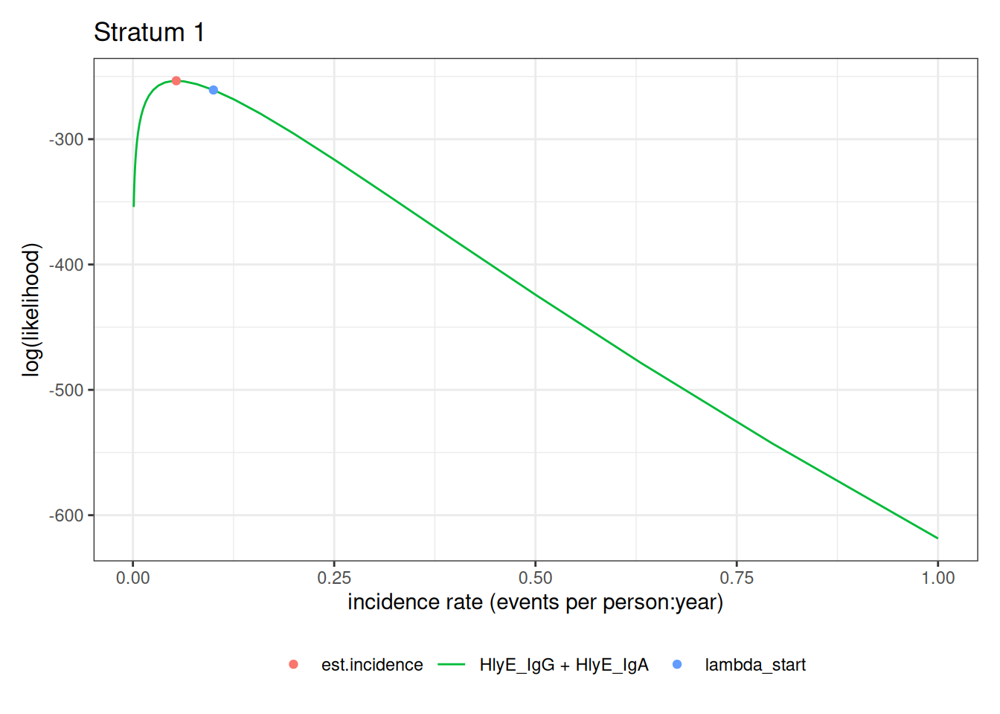
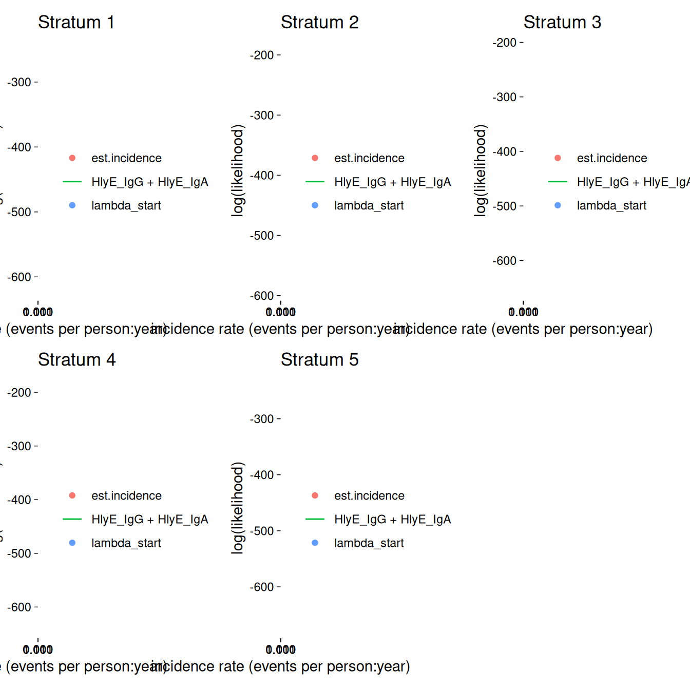
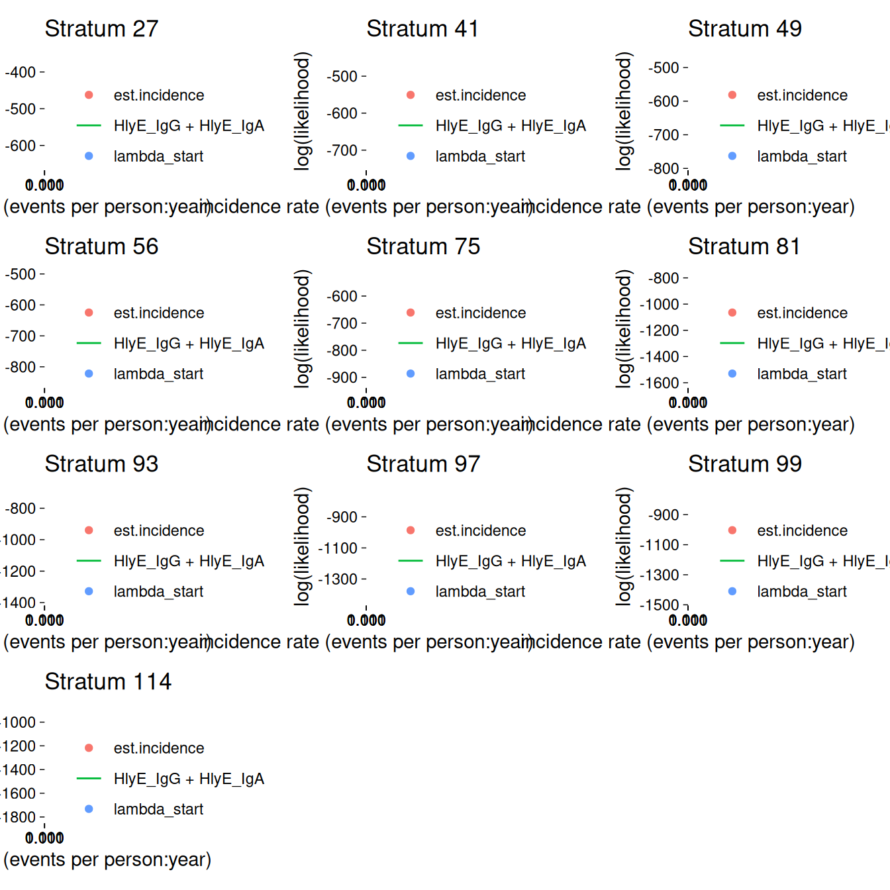
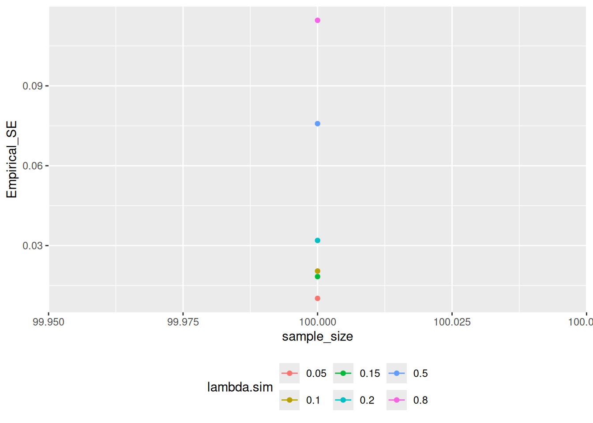
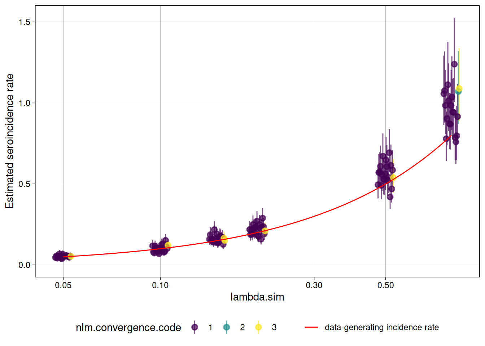

#> ── Attaching core tidyverse packages ──────────────────────── tidyverse 2.0.0 ──
#> ✔ dplyr 1.2.1 ✔ readr 2.2.0
#> ✔ forcats 1.0.1 ✔ stringr 1.6.0
#> ✔ ggplot2 4.0.3 ✔ tibble 3.3.1
#> ✔ lubridate 1.9.5 ✔ tidyr 1.3.2
#> ✔ purrr 1.2.2
#> ── Conflicts ────────────────────────────────────────── tidyverse_conflicts() ──
#> ✖ dplyr::filter() masks stats::filter()
#> ✖ dplyr::lag() masks stats::lag()
#> ℹ Use the conflicted package (<http://conflicted.r-lib.org/>) to force all conflicts to become errorsSimulation studies
Invalid Date
This vignette shows how to simulate a cross-sectional sample of seroresponses for incident infections as a Poisson process with frequency lambda. Responses are generated for the antibodies given in the antigen_isos argument.
Age range of the simulated cross-sectional record is lifespan.
The size of the sample is nrep.
Each individual is simulated separately, but different antibodies are modelled jointly.
Longitudinal parameters are calculated for an age: age_fixed (fixed age). However, when age_fixed is set to NA then the age at infection is used.
The boolean renew_params determines whether each infection uses a new set of longitudinal parameters, sampled at random from the posterior predictive output of the longitudinal model. If set to FALSE, a parameter set is chosen at birth and kept, but:
the baseline antibody levels (
y0) are updated with the simulated level (just) prior to infection, andwhen
age_fixed = NA, the selected parameter sample is updated for the age when infection occurs.
For our initial simulations, we will set renew_params = FALSE:
There is also a variable n_mcmc_samples: when n_mcmc_samples==0 then a random MC sample is chosen out of the posterior set (1:4000). When n_mcmc_samples is given a value in 1:4000, the chosen number is fixed and reused in any subsequent infection. This is for diagnostic purposes.
1 Simulate a single dataset
1.1 load model parameters
Here we load in longitudinal parameters; these are modeled from all SEES cases across all ages and countries:
1.2 visualize antibody decay model
We can graph individual MCMC samples from the posterior distribution of model parameters using a autoplot.curve_params() method for the autoplot() function:

We can use a logarithmic scale for the x-axis if desired:

We can add the median, 10%, and 90% quantiles of the model:

1.3 Simulate cross-sectional data
1.4 Noise parameters
We need to provide noise parameters for the analysis; here, we define them directly in our code:
1.5 Visualize data
We can plot the distribution of the antibody responses in the simulated data.

1.6 calculate log-likelihood
We can calculate the log-likelihood of the data as a function of the incidence rate directly:
#> [1] -292.5068
#> [1] -329.1799
#> [1] -621.6867
#> [1] -621.68671.7 graph log-likelihood
We can also graph the log-likelihoods, even without finding the MLEs, using graph_loglik():

1.8 estimate incidence
We can estimate incidence with est_seroincidence():
We can extract summary statistics with summary():
#> # A tibble: 1 × 11
#> est.start incidence.rate SE CI.lwr CI.upr se_type coverage log.lik
#> <dbl> <dbl> <dbl> <dbl> <dbl> <chr> <dbl> <dbl>
#> 1 0.1 0.279 0.0289 0.228 0.342 standard 0.95 -584.
#> # ℹ 3 more variables: iterations <int>, antigen.isos <chr>,
#> # nlm.convergence.code <ord>We can plot the log-likelihood curve with autoplot():

We can set the x-axis to a logarithmic scale:

2 Simulate multiple clusters with different lambdas
#> [1] 3In the preceding code chunk, we have determined that we can use 3 CPU cores to run computations in parallel.
#> # A tibble: 24,000 × 7
#> age id antigen_iso value lambda.sim sample_size cluster
#> <dbl> <chr> <chr> <dbl> <dbl> <dbl> <int>
#> 1 3.53 1 HlyE_IgA 0.725 0.05 100 1
#> 2 3.53 1 HlyE_IgG 0.749 0.05 100 1
#> 3 2.27 2 HlyE_IgA 0.647 0.05 100 1
#> 4 2.27 2 HlyE_IgG 0.382 0.05 100 1
#> 5 9.05 3 HlyE_IgA 0.176 0.05 100 1
#> 6 9.05 3 HlyE_IgG 0.585 0.05 100 1
#> 7 5.94 4 HlyE_IgA 0.845 0.05 100 1
#> 8 5.94 4 HlyE_IgG 0.744 0.05 100 1
#> 9 9.88 5 HlyE_IgA 0.644 0.05 100 1
#> 10 9.88 5 HlyE_IgG 0.292 0.05 100 1
#> # ℹ 23,990 more rowsWe can plot the distributions of the simulated responses:

2.1 Estimate incidence in each cluster
summary(ests) produces a tibble() with some extra meta-data:
#> Seroincidence estimated given the following setup:
#> a) Antigen isotypes : HlyE_IgG, HlyE_IgA
#> b) Strata : sample_size, lambda.sim, cluster
#>
#> Seroincidence estimates:
#> # A tibble: 120 × 16
#> Stratum sample_size lambda.sim cluster n est.start incidence.rate SE
#> <chr> <dbl> <dbl> <int> <int> <dbl> <dbl> <dbl>
#> 1 Stratu… 100 0.05 1 100 0.1 0.0853 0.0124
#> 2 Stratu… 100 0.05 2 100 0.1 0.0480 0.00863
#> 3 Stratu… 100 0.05 3 100 0.1 0.0537 0.00899
#> 4 Stratu… 100 0.05 4 100 0.1 0.0432 0.00834
#> 5 Stratu… 100 0.05 5 100 0.1 0.0455 0.00824
#> 6 Stratu… 100 0.05 6 100 0.1 0.0630 0.0105
#> 7 Stratu… 100 0.05 7 100 0.1 0.0622 0.0101
#> 8 Stratu… 100 0.05 8 100 0.1 0.0470 0.00844
#> 9 Stratu… 100 0.05 9 100 0.1 0.0338 0.00722
#> 10 Stratu… 100 0.05 10 100 0.1 0.0714 0.0108
#> # ℹ 110 more rows
#> # ℹ 8 more variables: CI.lwr <dbl>, CI.upr <dbl>, se_type <chr>,
#> # coverage <dbl>, log.lik <dbl>, iterations <int>, antigen.isos <chr>,
#> # nlm.convergence.code <ord>We can explore the summary table interactively using DT::datatable()
We can plot the likelihood for a single simulated cluster by subsetting that simulation in ests and calling plot():

We can also plot log-likelihood curves for several clusters at once (your computer might struggle to plot many at once):

The log_x argument also works here:

2.1.1 nlm() convergence codes
Make sure to check the nlm() exit codes (codes 3-5 indicate possible non-convergence):
#> # A tibble: 8 × 2
#> Stratum nlm.convergence.code
#> <chr> <ord>
#> 1 Stratum 10 3
#> 2 Stratum 23 3
#> 3 Stratum 27 3
#> 4 Stratum 44 3
#> 5 Stratum 48 3
#> 6 Stratum 61 3
#> 7 Stratum 95 3
#> 8 Stratum 105 3Solutions to nlm() exit codes 3-5:
- 3: decrease the
stepminargument toest_seroincidence()/est_seroincidence_by() - 4: increase the
iterlimargument toest_seroincidence()/est_seroincidence_by() - 5: increase the
stepmaxargument toest_seroincidence()/est_seroincidence_by()
We can extract the indices of problematic strata, if there are any:
#> [1] 10 23 27 44 48 61 95 105If any clusters had problems, we can take a look:

If any of the fits don’t appear to be at the maximum likelihood, we should re-run those clusters, adjusting the nlm() settings appropriately, to be sure.
2.2 plot distribution of estimates by simulated incidence rate
Finally, we can look at our simulation results:

We can analyze the simulation results with analyze_sims():
#> # A tibble: 6 × 8
#> lambda.sim sample_size Bias Mean_Est_SE Empirical_SE RMSE Mean_CI_Width
#> <dbl> <dbl> <dbl> <dbl> <dbl> <dbl> <dbl>
#> 1 0.05 100 0.000864 0.00887 0.0158 0.0155 0.0355
#> 2 0.1 100 0.00486 0.0141 0.0137 0.0142 0.0559
#> 3 0.15 100 0.00142 0.0182 0.0240 0.0234 0.0720
#> 4 0.2 100 0.0228 0.0240 0.0350 0.0411 0.0949
#> 5 0.5 100 0.0749 0.0556 0.0831 0.110 0.219
#> 6 0.8 100 0.166 0.0980 0.132 0.210 0.387
#> # ℹ 1 more variable: CI_Coverage <dbl>We can graph the analysis results with an autoplot() method:
#> `geom_line()`: Each group consists of only one observation.
#> ℹ Do you need to adjust the group aesthetic?
2.3 Effect of renew_params
Setting renew_params = TRUE is more realistic, but not is accounted for by the current method; for population samples from populations with high incidence rates, there may be bias:
